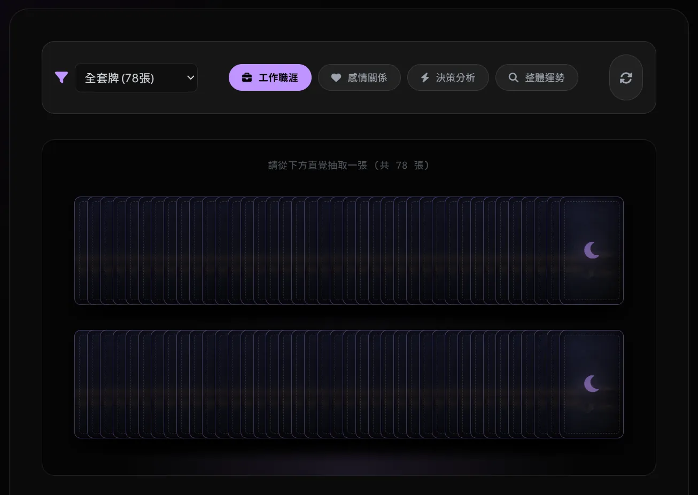

本專案實作一個輕量級的互動式前端模組。透過模擬隨機抽取機制，系統自動將對應的變數（卡牌屬性、正逆位狀態、使用者意圖領域）進行邏輯組裝，封裝成高質量的 System Prompt。
此架構旨在降低終端使用者與大型語言模型 (LLM) 深度交互的技術門檻，將抽象的心理投射具象化為精準的機器指令。
這是一個互動網頁：使用者選擇詢問的主題（事業 / 關係 / 健康等）、點擊抽一張塔羅牌，網頁自動產生一段給 ChatGPT 等 AI 工具的提問指令（含抽到的牌、正位 / 逆位、提問領域等資訊），複製貼到 AI 對話框就能得到結構化的解牌結果。功能定位類似「塔羅版的 prompt generator」，把「想問塔羅但不知道怎麼跟 AI 描述」這個門檻拿掉。
# 技術架構與實作細節 (Technical Implementation)
自適應網格與負邊距運算
為解決高達 78 個 DOM 節點（卡牌）在異質螢幕尺寸下的邊界溢出問題，捨棄了高維護成本的絕對座標定位。改採原生 JavaScript 動態偵測容器寬度，即時計算並注入「負邊距 (Negative Margin)」，確保龐大資料集能完美收斂於視窗框架內。
渲染優化與硬體加速
卡牌的洗牌、陣列展開與懸停抽取出列等動畫邏輯，全面採用 CSS transform: translate3d 結合 will-change 屬性。此舉強制將渲染負載轉移至 GPU 層，避免瀏覽器主執行緒阻塞，確保複雜交互過程的幀率穩定。
結構化提示詞封裝 (Prompt Construction)
核心運作是動態合成 Prompt 指令。當觸發抽卡事件後，系統會提取「領域參數 (Domain)」、「卡牌陣列索引 (Index)」與「正逆位布林值 (Orientation)」，依據預先定義的 Prompt Template 自動合成。該指令具備嚴格的系統邊界約束，強制 AI 屏除冗餘對話，直接執行精準的屬性映射與邏輯收斂。
# 領域知識 (Domain Knowledge)：塔羅系統邏輯解構

從系統分析視角切入，塔羅牌是一套「潛意識投射與聯想框架」。透過隨機提取具備高度象徵意義的視覺符號，強制大腦的認知神經網絡進行關聯性檢索，進而將隱含的內部狀態具象化為可解析的資訊。
基礎資料庫架構 (共 78 節點)
表徵系統中「不可逆的宏觀趨勢、核心原則與底層環境參數」。如：愚者 (高熵/初始狀態)、世界 (閉環/系統完成)。
提取此類節點，意味著當前分析標的具備較高的系統權重。
表徵「局部狀態、具體執行細節與短期反饋」。此資料集進一步細分為四大屬性分類：
🔥 權杖 (動能與執行力)
💧 聖杯 (關係拓撲與情緒)
💨 寶劍 (邏輯運算與衝突)
🌍 錢幣 (物質資源與結構)
資料集篩選策略 (Dataset Filtering)
-
宏觀節點分析 (建議：限制於大阿爾克那)
當分析標的涉及「長期職涯發展」或「人生階段轉換」等高維度議題時，限縮資料集於大牌，可濾除短期雜訊，獲取核心策略指引。 -
常態事件解析 (建議：啟用完整 78 張)
針對日常維運、短期專案執行或具體事件評估，開放全量資料集，確保宏觀趨勢與微觀細節的交集運算。 -
特定維度收斂 (建議：單一元素子集)
具備極度明確的分析目標時，如專注於資源分配（錢幣）或邏輯除錯（寶劍），直接指定子資料集以提升分析聚焦度。
資料抽取模型 (Extraction Models)
抽取機制的設定取決於問題的複雜度。以下為幾種常規的模型架構：
最高效的初始收斂方式。適用於釐清單一狀態、取得即時決策權重，或建立當日運行基線 (Baseline)。
系統配置說明：本介面預設採用單一節點抽取邏輯。請確立輸入變數（提問），並於下方模組進行點擊，系統將自動合成深度解析所需之 AI 指令。
提取三個相鄰節點，用於建構事件的時間序列（如「過去狀態、當前變數、預測走向」），或邏輯推演（如「問題核心、行動建議、預期結果」）。此模型利於觀察節點間的關聯性與動態影響。
配置 10 個具備特定權重的節點矩陣。涵蓋內部潛意識、外部環境擾動、歷史阻力與長期收斂方向。專為解析牽涉多方變數的高度複雜系統而設計。
# Interactive Module: Prompt Generator
AWAITING_EXTRACTION